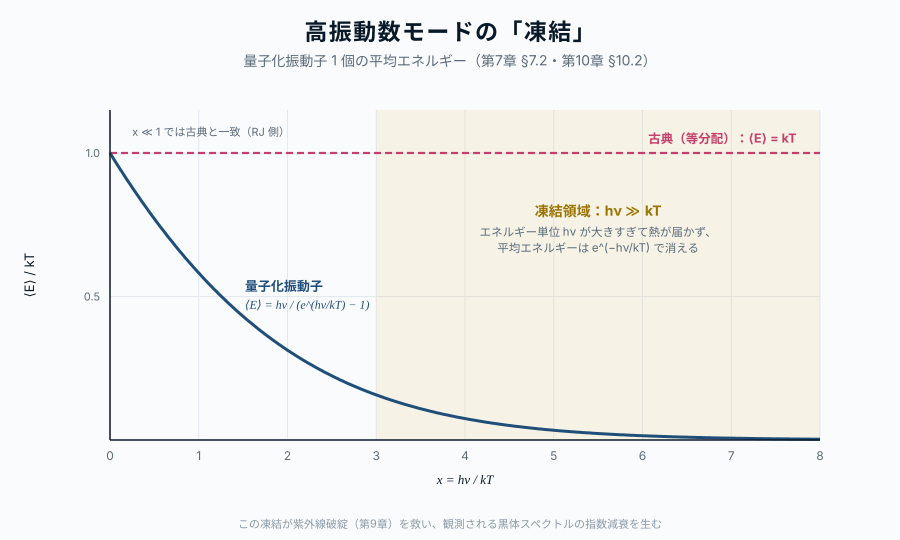

第10章 プランクの量子仮説
この章の主題：第9章で見たように、古典論で黒体スペクトルを説明しようとすると紫外線破綻を起こす。Planck (1900) はこの破綻を救うために、振動子のエネルギーが h\nu の整数倍にしか取れないという思い切った仮定を立てた。本章では、この仮定 ― エネルギー量子化（energy quantization）― がプランク分布を必然的に与えることを示す。第8章で Bose 統計から導いた占有因子と、ここで導く Planck のオリジナルな計算は、別の出発点から同じゴールに到達する。Planck の歴史的歩みと、現代的解釈の両方を示す。
この章の中心地図
中心地図：プランク関数 ― 本部で扱う因子
B_\nu(T) = \frac{2\, \boxed{h}\, \nu^3}{c^2} \cdot \frac{1}{e^{\boxed{h}\nu/kT} - 1}
強調されている Planck 定数 h（前因子の中と、指数の中の二箇所）が、第IV部で逆引きする対象である。エネルギーが連続でなく h\nu という離散単位でやりとりされる ― これが量子論の核心で、第10章（Planck の量子仮説）と第11章（Einstein の方法）でその必然性を二つの異なるルートから示す。
方針：本章で扱う Planck 定数 h（中心地図の強調因子）は、本書全体で最も重要な量子論的定数である。本章は「h を導入する」と「h がスペクトルの形に責任を持つ」ことを示す章である。
この章で答える問い
- プランクは何を「やむを得ず」仮定したのか
- なぜ h\nu という離散単位が必要だったのか
- プランクの量子仮説は、観測スペクトルのどの部分を救ったのか
- 振動子のエネルギー量子化と、光子の存在は同じことを言っているのか
到達目標
この章を読み終えると、読者は次のことができるようになる：
- プランクの量子仮説を出発点として、プランク分布を導ける
- h\nu が高振動数側の指数関数的減衰を生む仕組みを説明できる
- プランクの歴史的試行錯誤と、現代的解釈（光子の存在）の関係を整理できる
10.1 エネルギー量子 ― Planck の大胆な仮定
[本文目安：B3]
第9章で見た古典の破綻を救うには、エネルギーの離散単位 \epsilon(\nu) を導入する必要があった。Planck (1900) はこの単位として
\epsilon = h\nu \tag{13.1}
を仮定した。h は新しい普遍定数で、後に Planck 定数（Planck constant）と呼ばれる。現在の値は
h = 6.626 \times 10^{-27}\ \mathrm{erg \cdot s} = 6.626 \times 10^{-34}\ \mathrm{J \cdot s}
である。Planck はこの値を、彼の式が黒体スペクトルの観測データを再現するように決定した。
仮定の内容を正確に述べると次のようになる：
振動数 \nu で振動する電磁モード（あるいは空洞壁の振動子）のエネルギーは、0, h\nu, 2h\nu, 3h\nu, \ldots という離散的な値しかとらない。
これは古典物理から見ると不自然な仮定である。古典では振動子のエネルギーは任意の連続値をとれるはずだから。しかしこの仮定なしには、観測される黒体スペクトルの高振動数側の減衰は出てこない。
歴史：Planck 自身は当初、この量子仮説を計算上の便法として導入した。「振動子のエネルギーが本質的に離散である」という物理的解釈には、彼自身ためらいがあった。エネルギー量子の物理的実在性を主張したのは、後の Einstein (1905) ― 光電効果の論文 ― である。第11章で扱う。
10.2 振動子の量子化 ― 統計力学の組み直し
[本文目安：B3]
エネルギー量子 式 13.1 を仮定すると、第7章 §7.2 の手順で振動子の分配関数を組み直せる。エネルギー準位が E_n = n h\nu（n = 0, 1, 2, \ldots）で離散化された場合、分配関数は
Z_1(\beta) = \sum_{n=0}^{\infty} e^{-\beta n h\nu} = \frac{1}{1 - e^{-\beta h\nu}} \tag{13.2}
ここで \beta = 1/k_B T。これは無限等比級数の和である（古典の連続積分なら \int_0^\infty e^{-\beta E} dE = 1/\beta = k_B T が出る）。
分配関数の対数から平均エネルギーが求まる（第7章 §7.2 の手法）：
\langle E \rangle = -\frac{\partial \ln Z_1}{\partial \beta} = \frac{h\nu}{e^{h\nu/k_B T} - 1} \tag{13.3}
これが量子化された振動子のひとつあたりの平均エネルギーである。第7章 §7.2 の 式 10.5 で既に見た形だが、ここでは Planck の量子仮説から直接出ている。
式 13.3 を古典の等分配 \langle E \rangle_\text{classical} = k_B T と比較すると：
- 低振動数極限（h\nu \ll k_B T）：\langle E \rangle \to k_B T ― 古典と一致
- 高振動数極限（h\nu \gg k_B T）：\langle E \rangle \to h\nu \, e^{-h\nu/k_B T} \to 0 ― 古典より遥かに小さい

これが高振動数モードの「凍結」である。エネルギー単位 h\nu が熱エネルギー k_B T より遥かに大きい場合、そのモードを励起するための熱が手に入らず、平均エネルギーが指数関数的に小さくなる。
問い：なぜ「凍結」と呼ぶのか？
短答：高振動数モードに熱的にアクセスできない ― つまり熱エネルギーがそのモードに「行けない」 ― 状態を、低温物理の言葉で「凍結」（freeze-out）と呼ぶ。
もう一歩：同じ概念は、二原子分子の回転・振動自由度の低温での凍結、固体の比熱が低温で T^3 に従う Debye 則、宇宙論的にニュートリノが脱結合する状況など、さまざまな場面で再登場する。Planck の議論は、その最初の例である。
10.3 プランク分布の導出 ― 量子振動子 × モード密度
[本文目安：B3-B4｜導出：M1]
式 13.3 と、第9章 式 12.2 のモード密度 g(\nu) = 8\pi\nu^2/c^3 を組み合わせると、放射場の振動数あたりエネルギー密度は
u_\nu(T) = g(\nu) \cdot \langle E \rangle = \frac{8\pi h \nu^3}{c^3} \cdot \frac{1}{e^{h\nu/k_B T} - 1} \tag{13.4}
比強度に直すと
B_\nu(T) = \frac{c}{4\pi} u_\nu = \frac{2 h \nu^3}{c^2} \cdot \frac{1}{e^{h\nu/k_B T} - 1} \tag{13.5}
プランク分布が、振動子の量子化から導かれた。これが Planck (1900) の歴史的論文の核心である。
第8章で Bose 統計から導いた占有因子と、本章でエネルギー量子化から導いた占有因子は、全く同じ形になる：
| 出発点 | 占有因子 |
|---|---|
| 第8章：光子の Bose 統計（\mu = 0） | \bar{n} = 1/(e^{h\nu/k_B T} - 1) |
| 第10章：振動子のエネルギー量子化 | \langle E \rangle / h\nu = 1/(e^{h\nu/k_B T} - 1) |
これは偶然ではない。両者は同じ物理（電磁場の各モードを量子化された調和振動子と見る）の二つの言い方である。第24章で「電磁場の量子化」として整理し直す。
対応（観測）：高振動数で 1/(e^{h\nu/k_B T}-1) \sim e^{-h\nu/k_B T} が出ることが、観測される黒体スペクトルの指数減衰（第1章で見た）の起源である。これが Planck の量子仮説が「観測の必然」として要請された理由である。
10.4 Wien・Rayleigh–Jeans 両極限の再導出
[本文目安：B3-B4｜導出：M1]
式 13.5 から、第2章 §2.5 で見た両極限がきれいに出る。
低振動数極限（h\nu \ll k_B T）：分母 e^{h\nu/k_B T} - 1 \simeq h\nu/k_B T なので
B_\nu \to \frac{2\nu^2}{c^2} k_B T \tag{13.6}
これは第9章 式 12.5 の Rayleigh–Jeans 則と一致する。h が消えることに注意。この極限では古典統計が正しい。
高振動数極限（h\nu \gg k_B T）：分母 e^{h\nu/k_B T} - 1 \simeq e^{h\nu/k_B T} なので
B_\nu \to \frac{2h\nu^3}{c^2} e^{-h\nu/k_B T} \tag{13.7}
これが Wien の式である（Wien’s distribution law）。h が指数の中と前因子の両方に現れることに注意。
両極限の境目は h\nu \sim k_B T、すなわち \nu \sim k_B T/h \simeq 2 \times 10^{10} (T/\text{K}) Hz である。太陽光（T \sim 5800 K）なら境界は近赤外、CMB（2.7 K）なら境界はマイクロ波領域。
問い：なぜ Wien は Planck より先に Wien の式（経験式として）を発見できたのか？
短答：Wien (1896) は熱力学と次元解析だけで B_\nu = A\nu^3 f(\nu/T) という形（Wien displacement function）まで絞り、観測データに当てはめて f(x) = e^{-\beta x} という近似を得た。これが高振動数側に正しい形だが、低振動数では Rayleigh–Jeans の方が観測と合うことが後に判明した。
もう一歩：Planck の真の貢献は、Wien 式（高振動数で正しい）と Rayleigh–Jeans 式（低振動数で正しい）の両方を補間する単一の式を、量子仮説という物理的根拠つきで提示したこと。経験式の補間ではなく、物理的に正しい全振動数スペクトルを与えた。
10.5 歴史的背景と現代的解釈
[本文目安：B3]
Planck の量子仮説の歴史的・物理的位置づけを整理する。
Planck (1900) ― 黒体スペクトルを再現するために、空洞壁の物質振動子のエネルギーが h\nu の整数倍に限られると仮定。Planck 自身は当初これを計算上の便法と見なし、エネルギーが本質的に離散である物理的解釈は留保した。
Einstein (1905) ― 光電効果の解析から、電磁場そのものが量子化された光（光量子, light quanta）から成ることを主張。Planck の振動子の量子化と物理的に等価だが、解釈の強度がより強い。第11章で扱う。
現代的解釈（場の量子論）：電磁場の各モードを量子化された調和振動子として扱う（第VIII部・第24章）。各モードのエネルギー準位が E_n = (n + 1/2) h\nu（零点エネルギー込み）となり、n が「そのモードに含まれる光子の数」を表す。Planck の振動子と Einstein の光量子は、この描像の中で統一される。
観測の意義：Planck (1900) の論文は、20世紀物理学の出発点と広く認められている。一つの観測（黒体スペクトル）から、自然界に普遍的な定数 h が導入され、量子力学・場の量子論が立ち上がる流れの起点となった。本書の三原則「① 逆引き」の象徴的な瞬間とも言える ― 観測が理論を駆動した、その典型例である。
使えるようになった道具（§10.1〜10.5）：
- エネルギー量子 \epsilon = h\nu という仮定から、量子化振動子の平均エネルギー 式 13.3 が出る
- これにモード密度を組み合わせると、観測されるプランク分布全体形が再構成される
- Wien・Rayleigh–Jeans の両極限が一つの式から自然に出る ― 観測される異なる振動数帯のスペクトルが、単一の量子仮説で説明される
この章で何がわかったか
中心地図に戻る
本章で、中心地図プランク関数の 指数の中の h（h\nu/k_B T の項）と、前因子の h（2h\nu^3/c^2）の両方が、Planck の量子仮説 \epsilon = h\nu から必然として出ることを示した。これは中心地図の指数関数因子の量子論的起源を明らかにする。
ただし、Planck の議論は「空洞壁の物質振動子のエネルギーが量子化される」という形であり、光そのものが量子化されているかどうかは留保されたままだった。これを明確にするのが、第11章で扱う Einstein の方法である。
次章へ：第11章では Einstein (1905, 1916) の議論をたどる。光量子の導入と、自発放出・誘導放出・誘導吸収による詳細釣り合いから、プランク分布を再度導出する。Einstein 係数は線スペクトル（第VII部）の中心概念にもなり、本書の二つの地図（プランク関数地図と水素線地図）をつなぐ要となる。
演習問題
[導出補完] 模範解答 は折りたたみを展開して確認できる（オンライン版）。まず自力で解いてから開くこと。
問題 10-1 量子化振動子の分配関数と平均エネルギー
[★ 難易度：☆ ] [導出補完]
§10.2 は分配関数 Z_1=1/(1-e^{-\beta h\nu}) と平均エネルギー \langle E\rangle=h\nu/(e^{h\nu/k_BT}-1) を「第7章 §7.2 の手法で」与えた。両式を自力で導け。準位は E_n=nh\nu\ (n=0,1,2,\ldots)。
- 等比級数の和として Z_1=\sum_{n=0}^\infty e^{-\beta nh\nu}=\dfrac{1}{1-e^{-\beta h\nu}} を示せ（収束条件も述べよ）。
- \langle E\rangle=-\partial\ln Z_1/\partial\beta を実行して \langle E\rangle=\dfrac{h\nu}{e^{\beta h\nu}-1} を導け。
- 古典結果 \langle E\rangle=k_BT と比べ、低振動数極限で一致することを確認せよ。
関連：§10.2 振動子の量子化／手法は第7章 統計力学、古典との対比は演習 9-2。
模範解答（問題 10-1）
(1) 公比 r=e^{-\beta h\nu} の等比級数。\beta,h,\nu>0 より 0<r<1 で収束し、
Z_1=\sum_{n=0}^\infty r^n=\frac{1}{1-r}=\frac{1}{1-e^{-\beta h\nu}}.
(2) \ln Z_1=-\ln(1-e^{-\beta h\nu})。\beta で微分：
\langle E\rangle=-\frac{\partial\ln Z_1}{\partial\beta}=\frac{h\nu\,e^{-\beta h\nu}}{1-e^{-\beta h\nu}}=\frac{h\nu}{e^{\beta h\nu}-1}=\frac{h\nu}{e^{h\nu/k_BT}-1}.
(3) 低振動数 x\equiv h\nu/k_BT\ll1 で e^x-1\simeq x ゆえ \langle E\rangle\to h\nu/x=k_BT。古典の等分配と一致する。
答え：Z_1=1/(1-e^{-\beta h\nu})、\langle E\rangle=h\nu/(e^{h\nu/k_BT}-1)\xrightarrow{h\nu\ll k_BT}k_BT。
問題 10-2 両極限と「最初の量子補正」
[★ 難易度：☆☆ ] [導出補完]
§10.4 はプランク分布の低・高振動数極限を示した。導出を埋め、さらに一歩進める。x\equiv h\nu/k_BT とおく。
- 低振動数（x\ll1）で B_\nu\to\dfrac{2\nu^2}{c^2}k_BT（Rayleigh–Jeans）を導け。
- 平均エネルギー \langle E\rangle=\dfrac{h\nu}{e^x-1} を x の小ささで展開し、古典値 k_BT からの 最初の補正項 を求めよ。補正の符号は何を意味するか。
- 高振動数（x\gg1）で Wien の式 B_\nu\to\dfrac{2h\nu^3}{c^2}e^{-h\nu/k_BT} を導け。
関連：§10.4 Wien・Rayleigh–Jeans 両極限／RJ の古典導出は§9.2、観測比較は§2.5。
模範解答（問題 10-2）
(1) B_\nu=\dfrac{2h\nu^3}{c^2}\dfrac{1}{e^x-1}。x\ll1 で e^x-1\simeq x=h\nu/k_BT ゆえ B_\nu\to\dfrac{2h\nu^3}{c^2}\cdot\dfrac{k_BT}{h\nu}=\dfrac{2\nu^2}{c^2}k_BT。h が消える＝古典極限。
(2) e^x-1=x\left(1+\dfrac{x}{2}+\dfrac{x^2}{6}+\cdots\right) ゆえ
\langle E\rangle=\frac{h\nu}{e^x-1}=\frac{k_BT}{1+\frac{x}{2}+\cdots}=k_BT\left(1-\frac{x}{2}+\cdots\right)=k_BT-\frac{h\nu}{2}+\cdots.
最初の補正は -h\nu/2。負号は、量子化により各モードが古典の等分配値より小さいエネルギーしか受け取れない（高振動数ほど効く凍結の始まり）ことを意味する。
(3) x\gg1 で e^x-1\simeq e^x ゆえ B_\nu\to\dfrac{2h\nu^3}{c^2}e^{-x}=\dfrac{2h\nu^3}{c^2}e^{-h\nu/k_BT}。これが Wien の式。
答え：低：2\nu^2k_BT/c^2；補正 \langle E\rangle\simeq k_BT-\tfrac12 h\nu（負＝凍結の兆し）；高：2h\nu^3e^{-h\nu/k_BT}/c^2。
問題 10-3 プランク分布から Stefan–Boltzmann 則
[★ 難易度：☆☆☆ ] [導出補完]
第9章の表で「全エネルギー密度＝aT^4（有限）」とあったが、本文は積分を実行していない。プランクのエネルギー密度 u_\nu=\dfrac{8\pi h\nu^3}{c^3}\dfrac{1}{e^{h\nu/k_BT}-1} を全振動数で積分し、u=aT^4 を導いて放射定数 a を基本定数で表せ。
- x=h\nu/k_BT で変数変換し、u=\dfrac{8\pi h}{c^3}\left(\dfrac{k_BT}{h}\right)^4\displaystyle\int_0^\infty\frac{x^3}{e^x-1}dx を導け。
- \displaystyle\int_0^\infty\frac{x^3}{e^x-1}dx=\frac{\pi^4}{15} を用いて a=\dfrac{8\pi^5 k_B^4}{15c^3h^3} を示し、数値（SI）を概算せよ。
- u=aT^4 と射出強度 j=\sigma T^4 の関係 a=4\sigma/c から、\sigma の値を確認せよ。
関連：§10.3 プランク分布の導出／発散する古典版との対比は演習 9-3、積分公式は付録A 数学ノート。
模範解答（問題 10-3）
(1) x=h\nu/k_BT より \nu=k_BTx/h,\ d\nu=(k_BT/h)dx。代入して
u=\frac{8\pi h}{c^3}\left(\frac{k_BT}{h}\right)^4\int_0^\infty\frac{x^3}{e^x-1}dx.
(2) 積分 =\pi^4/15 を入れて
u=\frac{8\pi^5 k_B^4}{15c^3h^3}T^4\equiv aT^4,\qquad a=\frac{8\pi^5k_B^4}{15c^3h^3}\approx7.57\times10^{-16}\ \mathrm{J\,m^{-3}\,K^{-4}}.
(3) a=4\sigma/c より \sigma=ac/4=7.57\times10^{-16}\times3.00\times10^8/4\approx5.67\times10^{-8}\ \mathrm{W\,m^{-2}\,K^{-4}}。既知の Stefan–Boltzmann 定数と一致する。
答え：a=\dfrac{8\pi^5k_B^4}{15c^3h^3}\approx7.57\times10^{-16}\,\mathrm{J\,m^{-3}K^{-4}}、\sigma=ac/4\approx5.67\times10^{-8}\,\mathrm{W\,m^{-2}K^{-4}}。
問題 10-4 Wien 変位則：ピーク振動数は T に比例
[★ 難易度：☆☆ ] [理解を深める]
§10.4 は両極限の境目を \nu\sim k_BT/h と見積もった。プランク分布のピークを正確に求めて「変位則」を導く。
- B_\nu\propto\dfrac{\nu^3}{e^{x}-1}\ (x=h\nu/k_BT) を \nu で微分してゼロにおき、3(1-e^{-x})=x という超越方程式を導け。
- 数値解 x_{\rm peak}\approx2.821 を用いて \nu_{\rm peak}=2.821\,k_BT/h を示し、\nu_{\rm peak}\propto T を確認せよ。
- 太陽 T\simeq5800 K について \nu_{\rm peak} と対応波長を概算せよ（B_\lambda のピーク波長とは係数が異なることに触れよ）。
関連：§10.4 両極限と境界／波長表示の Wien 変位則の導出は演習 2-2、観測スペクトルのピークは第1章。
模範解答（問題 10-4）
(1) f(\nu)=\nu^3(e^x-1)^{-1}、x=h\nu/k_BT なので dx/d\nu=h/k_BT。積の微分をゼロとおき、\nu^2/(e^x-1) で割って h\nu/k_BT=x を使うと
3-\frac{x e^x}{e^x-1}=0\ \Longrightarrow\ 3(1-e^{-x})=x.
(2) この超越方程式の非自明解は x_{\rm peak}\approx2.821。よって \nu_{\rm peak}=x_{\rm peak}k_BT/h=2.821\,k_BT/h\propto T（Wien 変位則）。
(3) T=5800 K で \nu_{\rm peak}\approx3.4\times10^{14} Hz、\lambda=c/\nu_{\rm peak}\approx8.8\times10^{2} nm（近赤外）。これは B_\lambda を最大化して得る \lambda_{\rm peak}\approx500 nm とは別物。B_\nu と B_\lambda ではヤコビアン d\nu=-(c/\lambda^2)d\lambda のため最大化条件が異なり（\lambda 側は x\approx4.965）、\nu_{\rm peak}\lambda_{\rm peak}\ne c となる。
答え：3(1-e^{-x})=x\Rightarrow x\approx2.821、\nu_{\rm peak}=2.821k_BT/h\propto T。太陽で \nu_{\rm peak}\approx3.4\times10^{14} Hz（\sim880 nm）。B_\nu と B_\lambda のピークは一致しない。
さらに学ぶための参考文献
- Planck, “Ueber das Gesetz der Energieverteilung im Normalspectrum”, Annalen der Physik 309 (1901) — 量子仮説の原論文（独語）
- Pais, Subtle is the Lord (Oxford, 1982) — Planck・Einstein の物理学的位置づけ
- Reif, Fundamentals of Statistical and Thermal Physics (McGraw-Hill, 1965) — 量子化振動子の標準的扱い